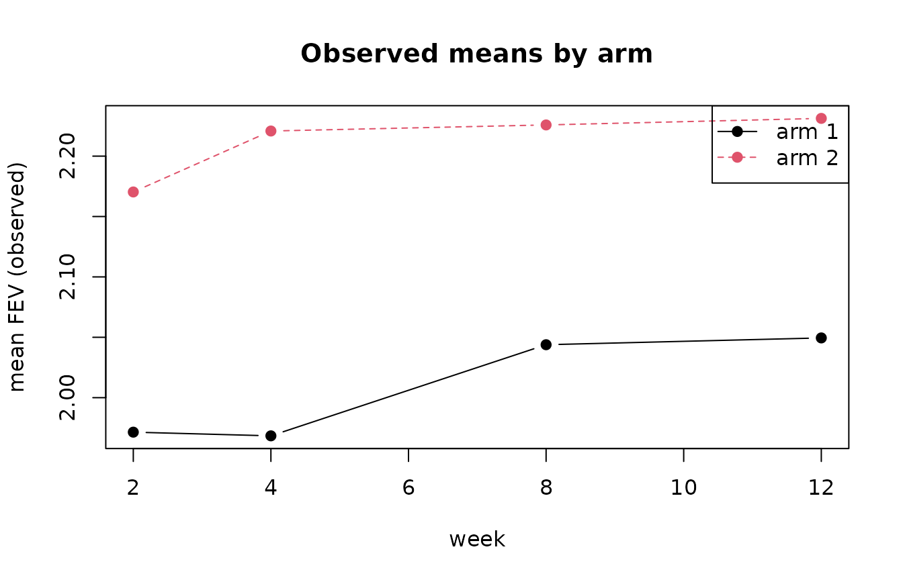
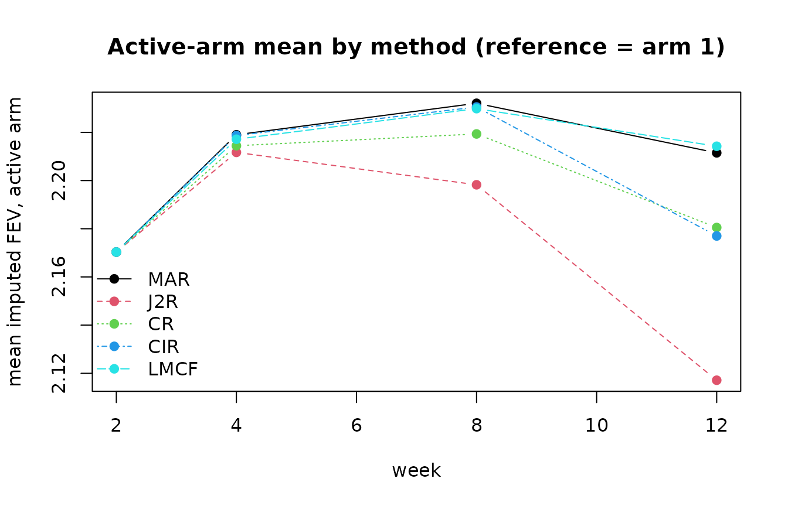

This vignette explains what each method assumes about patients after
they deviate from randomised treatment, and shows the consequences on
the asthma trial, where the outcome fev is
measured at weeks 2, 4, 8 and 12 and arm 1 is the reference
(control).
The assumptions
For a patient who discontinues treatment, the methods differ only in the mean of the conditional distribution from which post-deviation values are drawn:
| Method | Post-deviation mean | Reference arm |
|---|---|---|
| MAR | continues on the patient’s own arm | not required |
| J2R | jumps to the reference arm mean at the first missing visit | required |
| CR | equals the reference arm mean at every visit | required |
| CIR | keeps the increment gained on treatment, then accrues reference increments | required |
| LMCF | holds the last observed mean constant | not required |
MAR is the least conservative (the treatment benefit is assumed to persist); CR and J2R are the most conservative for an effective experimental arm.
Observed mean trajectories
obs <- stats::aggregate(fev ~ treat + time, data = asthma, FUN = mean)
plot(NULL, xlim = c(2, 12), ylim = range(obs$fev), xlab = "week",
ylab = "mean FEV (observed)", main = "Observed means by arm")
for (a in sort(unique(obs$treat))) {
d <- obs[obs$treat == a, ]
lines(d$time, d$fev, type = "b", lty = a, pch = 19, col = a)
}
legend("topright", legend = paste("arm", sort(unique(obs$treat))),
lty = sort(unique(obs$treat)), col = sort(unique(obs$treat)), pch = 19)
Imputed trajectories under each method
We impute the active arm (arm 2) under each method, with arm 1 as reference, and plot the imputed mean trajectory (averaged over 20 imputations).
methods <- c("MAR", "J2R", "CR", "CIR", "LMCF")
fits <- lapply(methods, function(m) arm_means(impute_method(m)))
names(fits) <- methods
active <- lapply(fits, function(f) f[f$treat == 2, ])
yr <- range(unlist(lapply(active, function(d) d$fev)))
plot(NULL, xlim = c(2, 12), ylim = yr, xlab = "week",
ylab = "mean imputed FEV, active arm",
main = "Active-arm mean by method (reference = arm 1)")
for (i in seq_along(active)) {
d <- active[[i]]
lines(d$time, d$fev, type = "b", pch = 19, col = i, lty = i)
}
legend("bottomleft", legend = methods, col = seq_along(methods),
lty = seq_along(methods), pch = 19, bty = "n")
Because most missingness in asthma is late dropout, the
methods agree at early visits and fan out by week 12: MAR keeps the
active arm highest, while CR and J2R pull it toward the (lower)
reference arm.
Choosing a method
- Use MAR as the primary analysis only if a persisting treatment effect after discontinuation is defensible.
- J2R and CR encode an immediate loss of benefit and are common conservative primary or sensitivity analyses for superiority trials.
- CIR is intermediate: the benefit already accrued is retained but no further benefit is gained.
- LMCF is rarely a primary analysis but is useful for comparison.
- The causal model provides a continuum between J2R
and CIR; see
vignette("causal-and-delta").